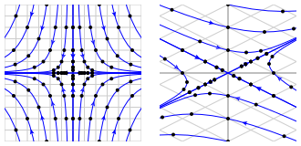
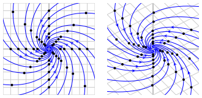
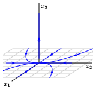
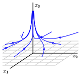
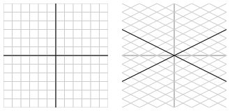

The last section demonstrated ways in which we may relate a matrix, and the effect that multiplication has on vectors, to a simpler form. For instance, if there is a basis of \(\real^n\) consisting of eigenvectors of \(A\text{,}\) we saw that \(A\) is similar to a diagonal matrix \(D\text{.}\) As a result, the effect of multiplying vectors by \(A\text{,}\) when expressed using the basis of eigenvectors, is the same as multiplying by \(D\text{.}\)
In this section, we will put these ideas to use as we explore discrete dynamical systems, first encountered in Subsection 3.3.3. Recall that we used a state vector \(\xvec\) to characterize the state of some system, such as the distribution of delivery trucks between two locations, at a particular time. A matrix \(A\) described the transition of the state vector with \(A\xvec\) characterizing the state of the system at a later time. Since we would like to understand how the state vector evolves over time, we are interested in studying the sequence of vectors \(A^k\xvec\text{.}\)
Our goal in this section is to describe the types of behaviors that dynamical systems exhibit and to develop a means of detecting these behaviors.
Preview Activity5.4.1.
Suppose that we have a diagonalizable matrix \(A=PDP^{-1}\) where
Find the eigenvalues of \(A\) and find a basis for the associated eigenspaces.
Form a basis of \(\real^2\) consisting of eigenvectors of \(A\) and write the vector \(\xvec = \twovec{1}{4}\) as a linear combination of basis vectors.
Write \(A\xvec\) as a linear combination of basis vectors.
For some power \(k\text{,}\) write \(A^k\xvec\) as a linear combination of basis vectors.
Find the vector \(A^5\xvec\text{.}\)
Subsection5.4.1A first example
We will begin with a dynamical system that illustrates how the ideas we’ve been developing can help us understand the populations of two interacting species. There are several possible ways in which two species may interact. For example, wolves on Isle Royale in northern Michigan prey on moose so this interaction is often called a predator-prey relationship. Other interactions between species, such as bees and flowering plants, are mutually beneficial for both species.
Activity5.4.2.
Suppose we have two species \(R\) and \(S\) that interact with each another and that we record the change in their populations from year to year. When we begin our study, the populations, measured in thousands, are \(R_0\) and \(S_0\text{;}\) after \(k\) years, the populations are \(R_k\) and \(S_k\text{.}\)
If we know the populations in one year, suppose that the populations in the following year are determined by the expressions
This is an example of a mutually beneficial relationship between two species. If species \(S\) is not present, then \(R_{k+1} = 0.9R_k\text{,}\) which means that the population of species \(R\) decreases every year. However, species \(R\) benefits from the presence of species \(S\text{,}\) which helps \(R\) to grow by 80% of the population of species \(S\text{.}\) In the same way, \(S\) benefits from the presence of \(R\text{.}\)
We will record the populations in a vector \(\xvec_k = \twovec{R_k}{S_k}\) and note that \(\xvec_{k+1} = A\xvec_k\) where \(A = \left[\begin{array}{rr}
0.9 \amp 0.8 \\
0.2 \amp 0.9 \\
\end{array}\right]
\text{.}\)
are eigenvectors of \(A\) and find their respective eigenvalues.
Suppose that initially \(\xvec_0 = \twovec{2}{3}\text{.}\) Write \(\xvec_0\) as a linear combination of the eigenvectors \(\vvec_1\) and \(\vvec_2\text{.}\)
Write the vectors \(\xvec_1\text{,}\)\(\xvec_2\text{,}\) and \(\xvec_3\) as linear combinations of the eigenvectors \(\vvec_1\) and \(\vvec_2\text{.}\)
What happens to \(\xvec_k\) after a very long time?
When \(k\) becomes very large, what happens to the ratio of the populations \(R_k/S_k\text{?}\)
After a very long time, by approximately what factor does the population of \(R\) grow every year? By approximately what factor does the population of \(S\) grow every year?
If we begin instead with \(\xvec_0 =
\twovec{4}{4}\text{,}\) what eventually happens to the ratio \(R_k/S_k\) as \(k\) becomes very large?
This activity demonstrates the type of systems we will be considering. In particular, we will have vectors \(\xvec_k\) that describe the state of the system at time \(k\) and a matrix \(A\) that describes how the state evolves from one time to the next: \(\xvec_{k+1} = A\xvec_k\text{.}\) The eigenvalues and eigenvectors of \(A\) provide the key that helps us understand how the vectors \(\xvec_k\) evolve and that enables us to make long-range predictions.
Let’s look at the specific example in the previous activity more carefully. We see that
and that the matrix \(A\) has eigenvectors \(\vvec_1 =
\twovec{2}{1}\) and \(\vvec_2=\twovec{-2}{1}\) with associated eigenvalues \(\lambda_1=1.3\) and \(\lambda_2=0.5\text{.}\)
With initial populations \(\xvec_0=\twovec{2}{3}\text{,}\) we have
Let’s shift our perspective slightly. The eigenvectors \(\vvec_1\) and \(\vvec_2\) form a basis \(\bcal\) of \(\real^2\text{,}\) which says that \(A\) is diagonalizable; that is, \(A = PDP^{-1}\) where
The coordinate system defined by the basis \(\bcal\) can be used to express the state vectors. For instance, we can write the initial state vector \(\xvec_0=\twovec{2}{3}= 2\vvec_1+\vvec_2\text{,}\) which means that \(\coords{\xvec_0}{\bcal} = \twovec{2}{1}\text{.}\) Moreover, \(\xvec_1=A\xvec_0 = (1.3)\cdot2\vvec_1 + (0.5)\cdot1\vvec_2\) so that
which is a restatement of the fact that \(A\) is similar to \(D\text{.}\)
Thinking about this geometrically, we begin with the vector \(\coords{\xvec_0}{\bcal}=\ctwovec{2}{1}\text{.}\) Subsequent vectors \(\coords{\xvec_k}{\bcal}\) are obtained by scaling horizontally by a factor of \(1.3\) and scaling vertically by a factor \(0.5\text{.}\) Notice how the points move along a curve away from the origin becoming ever closer to the horizontal axis. After a very long time, \(\coords{\xvec_k}{\bcal} \approx
\ctwovec{1.3^k\cdot2}{0}\text{.}\)
To recover the behavior of the sequence \(\xvec_0, \xvec_1,
\xvec_2, \ldots\text{,}\) we change coordinate systems using the basis defined by \(\vvec_1\) and \(\vvec_2\text{.}\) Here, the points move along a curve away from the origin becoming ever closer to the line defined by \(\vvec_1\text{.}\)
Eventually, the vectors become practically indistinguishable from a scalar multiple of \(\vvec_1 = \twovec{2}{1}\) since \(\xvec_k\approx 1.3^k\cdot2\vvec_1\text{.}\) This means that
so that we expect the population of species \(R\) to eventually be about twice that of species \(S\text{.}\)
In addition, \(\xvec_{k+1}
\approx 1.3\xvec_k\) so that \(R_{k+1}\approx 1.3 R_k\) and \(S_{k+1}\approx 1.3 S_k\text{,}\) which tells us that both populations are multiplied by 1.3 every year meaning the annual growth rate for both populations is about 30%.
In the same way, we can consider other possible initial populations \(\xvec_0\) as shown in Figure 5.4.1. Regardless of \(\xvec_0\text{,}\) the population vectors, in the coordinates defined by \(\bcal\text{,}\) are scaled horizontally by a factor of \(1.3\) and vertically by a factor of \(0.5\text{.}\) The sequence of points \(\coords{\xvec_k}{\bcal}\text{,}\) called trajectories, move along the curves, as shown on the left. In the standard coordinate system, we see that the trajectories converge to the eigenspace \(E_{1.3}\text{.}\)

Figure5.4.1.The trajectories of the dynamical system formed by the matrix \(A\) in the coordinate system defined by \(\bcal\text{,}\) on the left, and in the standard coordinate system, on the right.
We conclude that, regardless of the initial populations, the ratio of the populations \(R_k/S_k\) will approach 2 to 1 and that the growth rate for both populations approaches 30%. This example demonstrates the power of using eigenvalues and eigenvectors to rewrite the problem in terms of a new coordinate system. By doing so, we are able to predict the long-term behavior of the populations independently of the initial populations.
Diagrams like those shown in Figure 5.4.1 are called phase portraits. On the left of Figure 5.4.1 is the phase portrait of the diagonal matrix \(D=\mattwo{1.3}00{0.5}\) while the right of that figure shows the phase portrait of \(A =
\mattwo{0.9}{0.8}{0.2}{0.9}\text{.}\) The phase portrait of \(D\) is relatively easy to understand because it is determined only by the two eigenvalues. Once we have the phase portrait of \(D\text{,}\) however, the phase portrait of \(A\) has a similar appearance with the eigenvectors \(\vvec_j\) replacing the standard basis vectors \(\evec_j\text{.}\)
Subsection5.4.2Classifying dynamical systems
In the previous example, we were able to make predictions about the behavior of trajectories \(\xvec_k=A^k\xvec_0\) by considering the eigenvalues and eigenvectors of the matrix \(A\text{.}\) The next activity looks at a collection of matrices that demonstrate the types of behavior a \(2\times2\) dynamical system can exhibit.
Activity5.4.3.
We will now look at several more examples of dynamical systems. If \(P = \left[\begin{array}{rr}
1 \amp -1 \\
1 \amp 1 \\
\end{array}\right]
\text{,}\) we note that the columns of \(P\) form a basis \(\bcal\) of \(\real^2\text{.}\) Given below are several matrices \(A\) written in the form \(A=PEP^{-1}\) for some matrix \(E\text{.}\) For each matrix, state the eigenvalues of \(A\) and sketch a phase portrait for the matrix \(E\) on the left and a phase portrait for \(A\) on the right. Describe the behavior of \(A^k\xvec_0\) as \(k\) becomes very large for a typical initial vector \(\xvec_0\text{.}\)
This activity demonstrates six possible types of dynamical systems, which are determined by the eigenvalues of \(A\text{.}\)
Suppose that \(A\) has two real eigenvalues \(\lambda_1\) and \(\lambda_2\) and that both \(|\lambda_1|, |\lambda_2| \gt
1\text{.}\) In this case, any nonzero vector \(\xvec_0\) forms a trajectory that moves away from the origin so we say that the origin is a repellor. This is illustrated in Figure 5.4.2.
Figure5.4.2.The origin is a repellor when \(|\lambda_1|,
|\lambda_2| \gt 1\text{.}\)
Suppose that \(A\) has two real eigenvalues \(\lambda_1\) and \(\lambda_2\) and that \(|\lambda_1| \gt 1 \gt |\lambda_2|
\text{.}\) In this case, most nonzero vectors \(\xvec_0\) form trajectories that converge to the eigenspace \(E_{\lambda_1}\text{.}\) In this case, we say that the origin is a saddle as illustrated in Figure 5.4.3.
Figure5.4.3.The origin is a saddle when \(|\lambda_1|\gt 1 \gt
|\lambda_2|\text{.}\)
Suppose that \(A\) has two real eigenvalues \(\lambda_1\) and \(\lambda_2\) and that both \(|\lambda_1|, |\lambda_2| \lt
1\text{.}\) In this case, any nonzero vector \(\xvec_0\) forms a trajectory that moves into the origin so we say that the origin is an attractor. This is illustrated in Figure 5.4.4.
Figure5.4.4.The origin is an attractor when \(|\lambda_1|,
|\lambda_2| \lt 1\text{.}\)
Suppose that \(A\) has a complex eigenvalue \(\lambda = a+bi\) where \(|\lambda| \gt 1\text{.}\) In this case, a nonzero vector \(\xvec_0\) forms a trajectory that spirals away from the origin. We say that the origin is a spiral repellor, as illustrated in Figure 5.4.5.
Figure5.4.5.The origin is a spiral repellor when \(A\) has an eigenvalue \(\lambda=a+bi\) with \(a^2+b^2\gt 1\text{.}\)
Suppose that \(A\) has a complex eigenvalue \(\lambda = a+bi\) where \(|\lambda| = 1\text{.}\) In this case, a nonzero vector \(\xvec_0\) forms a trajectory that moves on a closed curve around the origin. We say that the origin is a center, as illustrated in Figure 5.4.6.
Figure5.4.6.The origin is a center when \(A\) has an eigenvalue \(\lambda=a+bi\) with \(a^2+b^2 = 1\text{.}\)
Suppose that \(A\) has a complex eigenvalue \(\lambda = a+bi\) where \(|\lambda| \lt 1\text{.}\) In this case, a nonzero vector \(\xvec_0\) forms a trajectory that spirals into the origin. We say that the origin is a spiral attractor, as illustrated in Figure 5.4.7.

Figure5.4.7.The origin is a spiral attractor when \(A\) has an eigenvalue \(\lambda=a+bi\) with \(a^2+b^2\lt 1\text{.}\)
This list includes many types of expected behavior, but there are other possibilities if, for instance, one of the eigenvalues is 0. The next section explores the situation when one of the eigenvalues is 1.
Activity5.4.4.
In this activity, we will consider several ways in which two species might interact with one another. Throughout, we will consider two species \(R\) and \(S\) whose populations in year \(k\) form a vector \(\xvec_k=\twovec{R_k}{S_k}\) and which evolve according to the rule
Explain why the species do not interact with one another. Which of the six types of dynamical systems do we have? What happens to both species after a long time?
Suppose now that \(A = \left[\begin{array}{rr}
0.7 \amp 0.3 \\
0 \amp 1.6 \\
\end{array}\right]
\text{.}\)
Explain why \(S\) is a beneficial species for \(R\text{.}\) Which of the six types of dynamical systems do we have? What happens to both species after a long time?
If \(A = \left[\begin{array}{rr}
0.7 \amp 0.5 \\
-0.4 \amp 1.6 \\
\end{array}\right]
\text{,}\) explain why this describes a predator-prey system. Which of the species is the predator and which is the prey? Which of the six types of dynamical systems do we have? What happens to both species after a long time?
Suppose that \(A = \left[\begin{array}{rr}
0.5 \amp 0.2 \\
-0.4 \amp 1.1 \\
\end{array}\right]
\text{.}\) Compare this predator-prey system to the one in the previous part. Which of the six types of dynamical systems do we have? What happens to both species after a long time?
Subsection5.4.3A \(3\times3\) system
Up to this point, we have focused on \(2\times2\) systems. In fact, the general case is quite similar. As an example, consider a \(3\times3\) system \(\xvec_{k+1}=A\xvec_k\) where the matrix \(A\) has eigenvalues \(\lambda_1 = 0.6\text{,}\)\(\lambda_2 = 0.8\text{,}\) and \(\lambda_3=1.1\text{.}\) Since the eigenvalues are real and distinct, there is a basis \(\bcal\) consisting of eigenvectors of \(A\) so we can look at the trajectories \(\coords{\xvec_k}{\bcal}\) in the coordinate system defined by \(\bcal\text{.}\) The phase portraits in Figure 5.4.8 show how some representative trajectories will evolve. We see that all the trajectories will converge into the eigenspace \(E_{1.1}\text{.}\)


Figure5.4.8.In a \(3\times3\) system with \(\lambda_1 = 0.6\text{,}\)\(\lambda_2=0.8\text{,}\) and \(\lambda_3 = 1.1\text{,}\) the trajectories \(\coords{\xvec_k}{\bcal}\) move along the curves shown above.
In the same way, suppose we have a \(3\times3\) system with complex eigenvalues \(\lambda=0.8 \pm 0.5i\) and \(\lambda_3=1.1\text{.}\) Since the complex eigenvalues satisfy \(|\lambda| \lt 1\text{,}\) there is a two-dimensional subspace in which the trajectories spiral in toward the origin. The phase portraits in Figure 5.4.9 show some of the trajectories. Once again, we see that all the trajectories converge into the eigenspace \(E_{1.1}\text{.}\)
Figure5.4.9.In a \(3\times3\) system with complex eigenvalues \(\lambda = a\pm bi\) with \(|\lambda| \lt 1\) and \(\lambda_3=1.1\text{,}\) the trajectories \(\coords{\xvec_k}{\bcal}\) move along the curves shown above.
Activity5.4.5.
The following type of analysis has been used to study the population of a bison herd. We will divide the population of female bison into three groups: juveniles who are less than one year old; yearlings between one and two years old; and adults who are older than two years.
Each year,
80% of the juveniles survive to become yearlings.
90% of the yearlings survive to become adults.
80% of the adults survive.
40% of the adults give birth to a juvenile.
By \(J_k\text{,}\)\(Y_k\text{,}\) and \(A_k\text{,}\) we denote the number of juveniles, yearlings, and adults in year \(k\text{.}\) We have
Find similar expressions for \(Y_{k+1}\) and \(A_{k+1}\) in terms of \(J_k\text{,}\)\(Y_k\text{,}\) and \(A_k\text{.}\)
As is usual, we write the matrix \(\xvec_k=\threevec{J_k}{Y_k}{A_k}\text{.}\) Write the matrix \(A\) such that \(\xvec_{k+1} = A\xvec_k\) and find its eigenvalues.
We can write \(A = PEP^{-1}\) where the matrices \(E\) and \(P\) are approximately:
Make a prediction about the long-term behavior of \(\xvec_k\text{.}\) For instance, at what rate does it grow? For every 100 adults, how many juveniles, and yearlings are there?
Suppose that the birth rate decreases so that only 30% of adults give birth to a juvenile. How does this affect the long-term growth rate of the herd?
Suppose that the birth rate decreases further so that only 20% of adults give birth to a juvenile. How does this affect the long-term growth rate of the herd?
Find the smallest birth rate that supports a stable population.
Subsection5.4.4Summary
We have been exploring discrete dynamical systems in which an initial state vector \(\xvec_0\) evolves over time according to the rule \(\xvec_{k+1}=A\xvec_k\text{.}\) The eigenvalues and eigenvectors of \(A\) help us understand the behavior of the state vectors. In the \(2\times2\) case, we saw that
\(|\lambda_1|, |\lambda_2| \lt 1\) produces an attractor so that trajectories are pulled in toward the origin.
\(|\lambda_1| \gt 1\) and \(|\lambda_2| \lt 1\) produces a saddle in which most trajectories are pushed away from the origin and in the direction of \(E_{\lambda_1}\text{.}\)
\(|\lambda_1|, |\lambda_2| \gt 1\) produces a repellor in which trajectories are pushed away from the origin.
The same kind of reasoning allows us to analyze \(n\times n\) systems as well.
Exercises5.4.5Exercises
1.
For each of the \(2\times2\) matrices below, find the eigenvalues and, when appropriate, the eigenvectors to classify the dynamical system \(\xvec_{k+1}=A\xvec_k\text{.}\) Use this information to sketch the phase portraits.
We will consider matrices that have the form \(A=PDP^{-1}\) where
\begin{equation*}
D = \mattwo p00{\frac12},
P = \mattwo 2{-2}11
\end{equation*}
where \(p\) is a parameter that we will vary. Sketch phase portraits for \(D\) and \(A\) below when
\(p=\frac12\text{.}\)

\(p=1\text{.}\)
\(p=2\text{.}\)
For the different values of \(p\text{,}\) determine which types of dynamical system results. For what range of \(p\) values do we have an attractor? For what range of \(p\) values do we have a saddle? For what value does the transition between the two types occur?
3.
Suppose that the populations of two species interact according to the relationships
where \(p\) is a parameter. As we saw in the text, this dynamical system represents a typical predator-prey relationship, and the parameter \(p\) represents the rate at which species \(R\) preys on \(S\text{.}\) We will denote the matrix \(A=\mattwo{\frac12}{\frac12}{-p}2\text{.}\)
If \(p = 0\text{,}\) determine the eigenvectors and eigenvalues of the system and classify it as one of the six types. Sketch the phase portraits for the diagonal matrix \(D\) to which \(A\) is similar as well as the phase portrait for \(A\text{.}\)
If \(p=1\text{,}\) determine the eigenvectors and eigenvalues of the system. Sketch the phase portraits for the diagonal matrix \(D\) to which \(A\) is similar as well as the phase portrait for \(A\text{.}\)
For what values of \(p\) is the origin a saddle? What can you say about the populations when this happens?
Describe the evolution of the dynamical system as \(p\) begins at \(0\) and increases to \(p=1\text{.}\)
Find the eigenvalues of \(A\text{.}\) To which of the six types does the system \(\xvec_{k+1}=A\xvec_{k}\) belong?
Using the eigenvalues of \(A\text{,}\) we can write \(A=PEP^{-1}\) for some matrices \(E\) and \(P\text{.}\) What is the matrix \(E\) and what geometric effect does multiplication by \(E\) have on vectors in the plane?
If we remember that \(A^k = PE^kP^{-1}\text{,}\) determine the smallest positive value of \(k\) for which \(A^k=I\text{?}\)
Find the eigenvalues of \(B\text{.}\)
Then find a matrix \(E\) such that \(B =
PEP^{-1}\) for some matrix \(P\text{.}\) What geometric effect does multiplication by \(E\) have on vectors in the plane?
Determine the smallest positive value of \(k\) for which \(B^k=I\text{.}\)
5.
Suppose we have the female population of a species is divided into juveniles, yearlings, and adults and that each year
90% of the juveniles live to be yearlings.
80% of the yearlings live to be adults.
60% of the adults survive to the next year.
50% of the adults give birth to a juvenile.
Set up a system of the form \(\xvec_{k+1}=A\xvec_k\) that describes this situation.
Find the eigenvalues of the matrix \(A\text{.}\)
What prediction can you make about these populations after a very long time?
If the birth rate goes up to 80%, what prediction can you make about these populations after a very long time? For every 100 adults, how many juveniles, and yearlings are there?
6.
Determine whether the following statements are true or false and provide a justification for your response. In each case, we are considering a dynamical system of the form \(\xvec_{k+1} =
A\xvec_k\text{.}\)
If the \(2\times2\) matrix \(A\) has a complex eigenvalue, we cannot make a prediction about the behavior of the trajectories.
If \(A\) has eigenvalues whose absolute value is smaller than 1, then all the trajectories are pulled in toward the origin.
If the origin is a repellor, then it is an attractor for the system \(\xvec_{k+1} = A^{-1}\xvec_k\text{.}\)
If a \(4\times4\) matrix has complex eigenvalues \(\lambda_1\text{,}\)\(\lambda_2\text{,}\)\(\lambda_3\text{,}\) and \(\lambda_4\text{,}\) all of which satisfy \(|\lambda_j| \gt
1\text{,}\) then all the trajectories are pushed away from the origin.
If the origin is a saddle, then all the trajectories are pushed away from the origin.
7.
The Fibonacci numbers form the sequence of numbers that begins \(0, 1, 1, 2, 3, 5, 8, 13, \ldots\text{.}\) If we let \(F_n\) denote the \(n^{th}\) Fibonacci number, then
Use this relationship to compute \(F_{20}\text{.}\)
Explain why \(F_{n+1}/F_{n}\approx \lambda_1\) when \(n\) is very large.
The number \(\lambda_1=\frac{1+\sqrt{5}}{2} = \phi\) is called the golden ratio and is one of mathematics’ special numbers.
8.
This exercise is a continuation of the previous one.
The Lucas numbers \(L_n\) are defined by the same relationship as the Fibonacci numbers: \(L_{n+2}=L_{n+1}+L_n\text{.}\) However, we begin with \(L_0=2\) and \(L_1=1\text{,}\) which leads to the sequence \(2,1,3,4,7,11,\ldots\text{.}\)
As before, form the vector \(\xvec_n=\twovec{L_{n+1}}{L_n}\) so that \(\xvec_{n+1}=A\xvec_n\text{.}\) Express \(\xvec_0\) as a linear combination of \(\vvec_1\) and \(\vvec_2\text{,}\) eigenvectors of \(A\text{.}\)
Explain why \(L_n\) is the closest integer to \(\phi^n\) when \(n\) is large, where \(\phi =
\lambda_1\) is the golden ratio.
Use this observation to find \(L_{20}\text{.}\)
9.
Gil Strang defines the Gibonacci numbers\(G_n\) as follows. We begin with \(G_0 = 0\) and \(G_1=1\text{.}\) A subsequent Gibonacci number is the average of the two previous; that is, \(G_{n+2} = \frac12(G_{n}+G_{n+1})\text{.}\) We then have
If \(\xvec_n=\twovec{G_{n+1}}{G_n}\text{,}\) find the matrix \(A\) such that \(\xvec_{n+1} =
A\xvec_n\text{.}\)
Find the eigenvalues and associated eigenvectors of \(A\text{.}\)
Explain why this dynamical system does not neatly fit into one of the six types that we saw in this section.
Write \(\xvec_{0}\) as a linear combination of eigenvectors of \(A\text{.}\)
Write \(\xvec_n\) as a linear combination of eigenvectors of \(A\text{.}\)
What happens to \(G_n\) as \(n\) becomes very large?
10.
Consider a small rodent that lives for three years. Once again, we can separate a population of females into juveniles, yearlings, and adults. Suppose that, each year,
Half of the juveniles live to be yearlings.
One quarter of the yearlings live to be adults.
Adult females produce eight female offspring.
None of the adults survive to the next year.
Writing the populations of juveniles, yearlings, and adults in year \(k\) using the vector \(\xvec_k=\threevec{J_k}{Y_k}{A_k}\text{,}\) find the matrix \(A\) such that \(\xvec_{k+1} = A\xvec_k\text{.}\)
Show that \(A^3=I\text{.}\)
What are the eigenvalues of \(A^3\text{?}\) What does this say about the eigenvalues of \(A\text{?}\)
Verify your observation by finding the eigenvalues of \(A\text{.}\)
What can you say about the trajectories of this dynamical system?
What does this mean about the population of rodents?
Find a population vector \(\xvec_0\) that is unchanged from year to year.